MapNG
MapNG🛣️ Two new road surfaces to try: Mesh Roads and Hero Roads
MapNG's roads have always been painted onto the terrain. The terrain is a grid of squares a metre or more across, so on a hill a painted road rides every square's edge. The best community maps get a smooth ride from road meshes laid over the ground. Under Fine-tuning > Road surfaces there are now three choices: Decal roads (as before, and still the default), and two experimental ones.
Mesh Roads (experimental)
Each paved road also gets one of BeamNG's own Mesh Road objects under it, saved in the level and there to edit in the World Editor. MapNG's lane markings are drawn on top. Pieces of a road are joined into one deck, the through road goes first at a junction, and a deck leans with the ground across it.
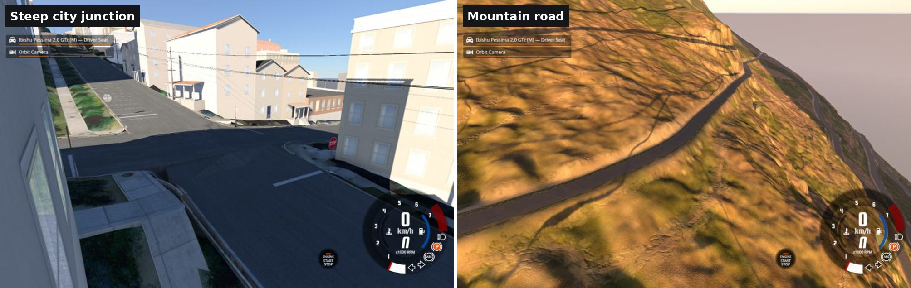
To know whether a change helps, every paved road of a test level is now walked in the game half a metre at a time, and every place where the surface steps by more than 8 cm is counted. Over one night's work on 20 test areas that count went from 339 to 253. It is not zero: junctions on hills and joins to bridges still have steps, which is why this stays experimental.
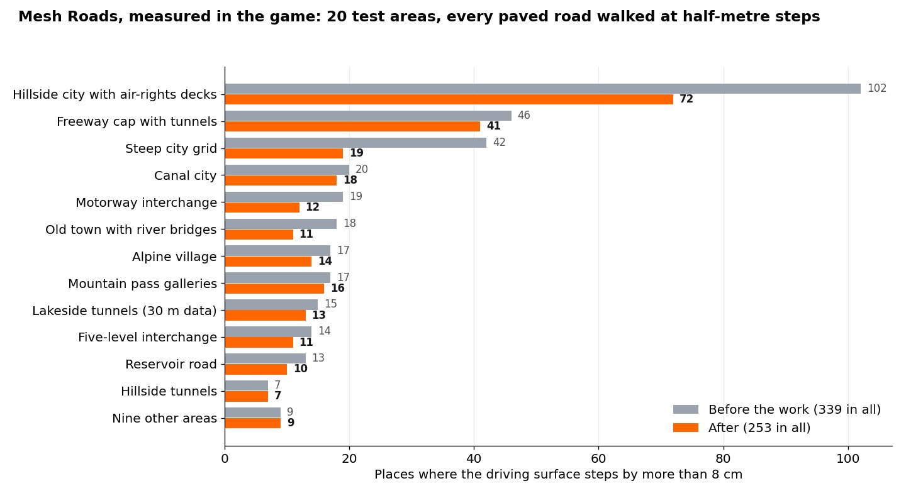
Hero Roads (experimental): built once, then baked
BeamNG's newer Hero Road tool makes a road mesh with a crown and shoulders. With this choice the level builds Hero Roads from MapNG's roads the first time it loads. A BeamNG developer tested it on a large map and sent three pieces of feedback, all in this version:
- Lanes are the real width. MapNG's road surface includes its paved shoulders, and all of it was being shared out among the lanes: a road with 3.5 m lanes came out with 4.1 m lanes. Lanes now get the driving width and the rest becomes the Hero Road's shoulder.
- Far fewer roads and points. MapNG cuts a road at every junction, so his map showed over 400 roads in the editor. Pieces that run on into each other are now one Hero Road, and a node is kept only where the road's shape needs one. On a test town: 229 roads became 88, and 2,419 nodes became 1,172.
- Baked, so later loads are instant. After building, the level runs the editor's own Bake on every road: each becomes ordinary mesh files with levels of detail. The first load of the test town took 42 seconds to build and bake; the second load placed the baked meshes with nothing to rebuild.
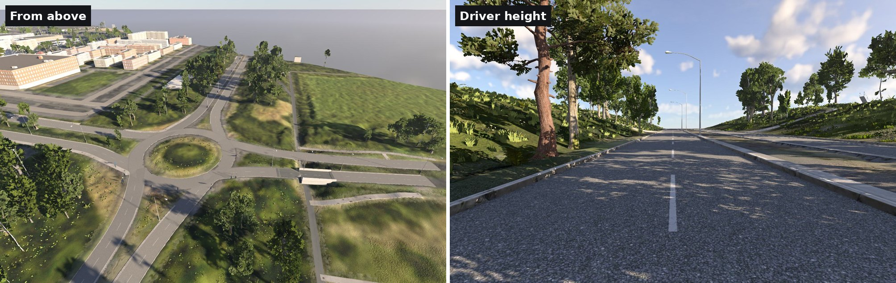
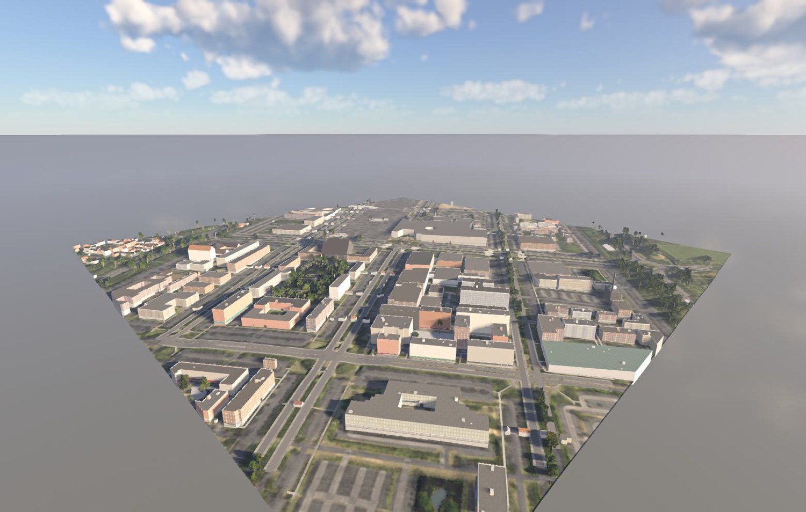
The baked files are kept in the game's user folder, so a level shared with a friend bakes once on their PC too. To edit the roads in the Hero Road tool, type mainLevel.heroRoads().edit() in the game's console. Junctions are not joined yet: each Hero Road ends square.
🌉 Bridge ends that meet the ground
For this version every paved road of three test levels (a motorway interchange, a river town and a freeway cap with tunnels) was walked in the game at half-metre steps. Most of each bridge was smooth. The ends were not, and three causes turned up.
A wall across the motorway
Where a ramp lane and the main carriageway shared a bridge and ended at the same point, MapNG took them for one road running on into the other and joined their ends. The join twisted the parapets across the road: a concrete wall 0.9 m high over every lane. Two parts are now joined only when one really continues from the other.
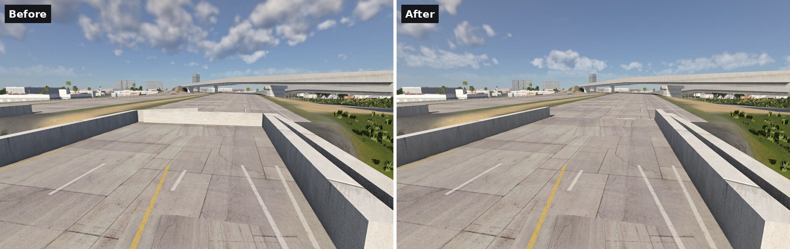
A gap between the bridge and the road
The ground under a bridge is kept low, and the ground of the road beyond it is raised to road height. The stretch just past a bridge's last point was being treated as still under the bridge, so where the ground there lay more than 1.5 m down nothing was filled in: a slot between the end of the deck and the road. That happened at one end of a bridge only, never at its start.
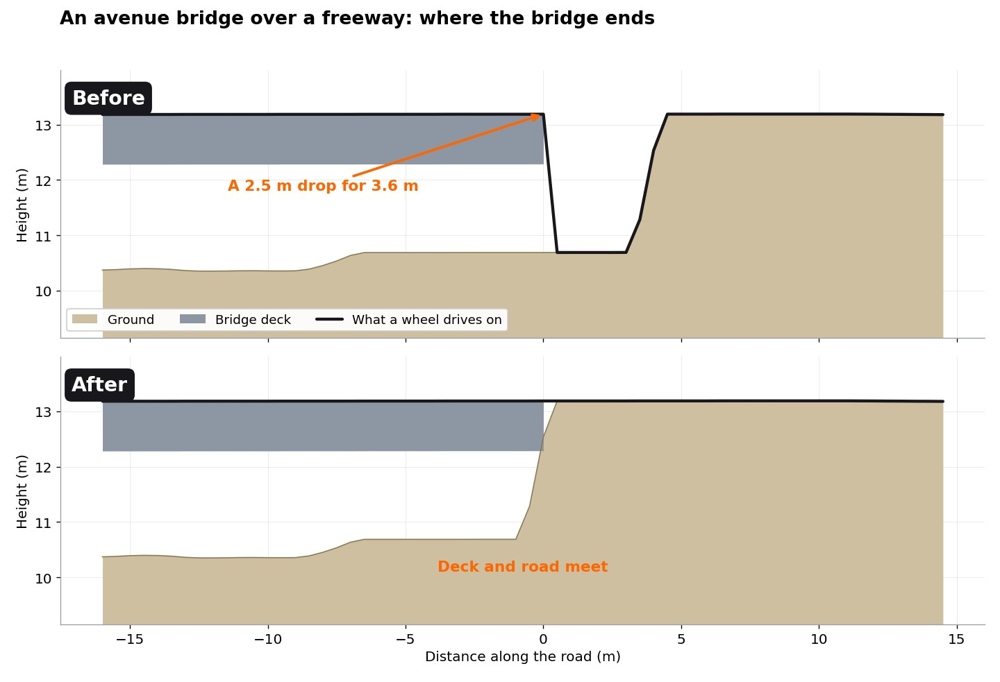
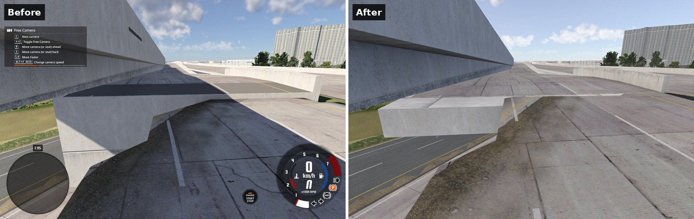
A notch where the road steps onto a deck
The terrain is a grid, so its last square before a bridge slopes away from road height. Each deck now has a short lip that laps onto the ground road, just under its surface.
Places with a step of more than 8 cm, counted in the game: the freeway cap went from 43 to 34 and the interchange from 22 to 17. What is left is listed under Next: this is better, not finished.
Also for bridges and tunnels: a road well above an open tunnel road becomes a bridge over it, a tunnel road left on the ground and the road above it no longer cut through each other, a road keeps its height under a gallery roof, and a tagged tunnel under a flat roof past its bore is built as a gallery, open to the valley.
📏 Road widths that fit the country
A BeamNG developer's map of the Pennines came out with roads far too wide, and his export report showed why: MapNG's usual lane widths, and the metre of asphalt outside each edge line, were measured on BeamNG's own levels, which are North American roads. A road's width is now taken from, in this order:
- A width mapped in OpenStreetMap. It always wins.
- The satellite picture, if you switch on Map data > Measure road widths, wherever the road's edges are clear in it.
- The country's own figures. A new library holds the lane width usual for each road class, and the paved strip outside the edge line, for the ten countries MapNG is used from most: the United States, Russia, Poland, Germany, the United Kingdom, France, the Netherlands, Italy, Canada and Brazil. Each was read from the country's design rules, and its sources are listed beside it in the code.
- The region's figures for any other country, and MapNG's usual ones where the place is not known.
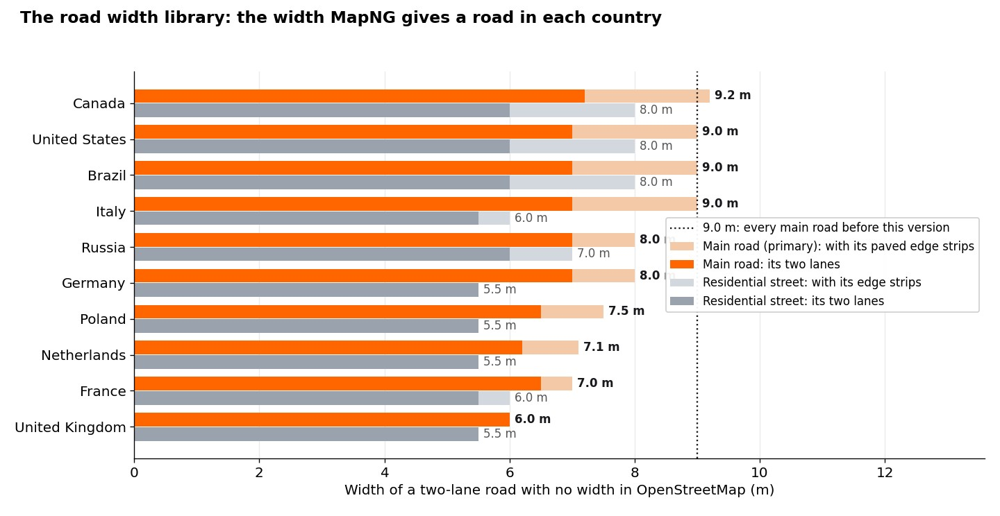
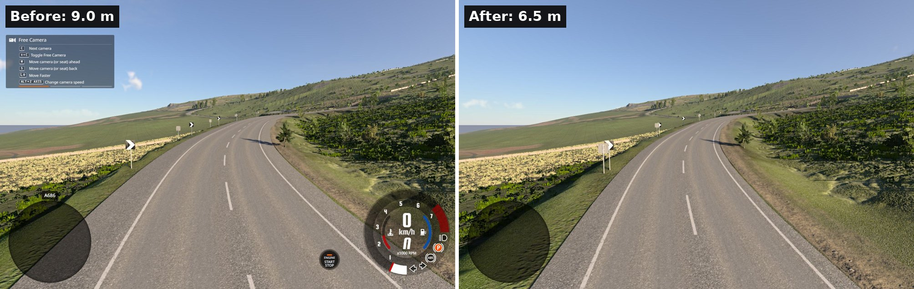
- Single-track roads. A lane tagged
lanes=1was built with two lanes, 6 m wide. The mapper's count now wins: one lane, 3.5 m (4.5 m in Russia, by its rule). - Measuring from the satellite picture no longer widens a road: where the verge or a stone wall is the road's own grey, it read too wide. Changing the switch now makes Generate run again, and the note in Fine-tuning says how many roads were measured out of how many. The desktop app measures every road; the website keeps a limit on how many pictures it downloads.
- The figures are a starting point. A design rule and the road outside your window can differ, and a rule's classes do not map exactly onto the map's road types. If your country's roads come out wrong, say so on Discord with a measurement.
🧭 Generate asks what you are making
A BeamNG developer put it plainly: there are so many options now that it is easy to get lost. The Generate step now starts with one question: a BeamNG level, Assets (heightmaps, textures, 3D models), or Both. The Export step then shows only what belongs to that answer.
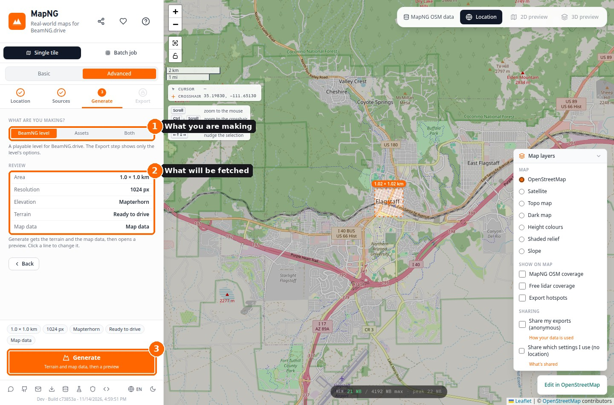
Generate also paints only the ground texture you chose. The others are made when you first ask for them, with a small sign in the view bar while one is being prepared.
🧊 3D models: a picked area, in tiles, at a spacing you choose
From a tester who builds maps with MapNG's models. A GLB or Collada export can now be of an area picked on the 2D preview instead of the whole map, cut into tiles, and at a point spacing you choose. The panel shows the points and the file size before you download. Models come out in the level's own frame, so a model and the level line up, and a 2 km map keeps its full detail.
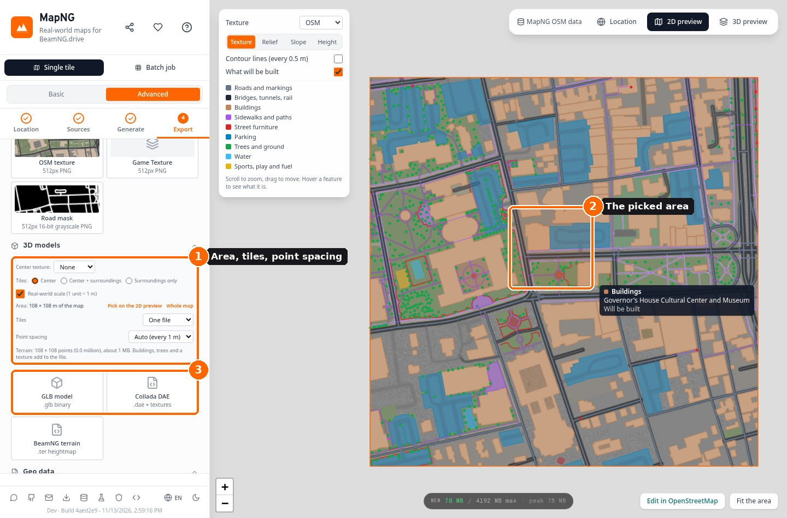
📐 See which elevation source is best, before you generate
Compare sources here, at any size
"Compare sources here" has its own section now. It shows every source the place has, including USGS 1 m in the United States and Poland's national survey, at a size you choose up to the whole selection. GPXZ can be compared over all of it too: the number of calls is shown first, and what it downloads is kept for Generate.
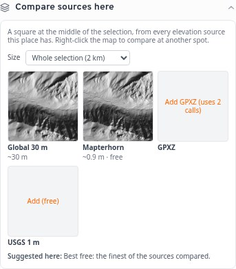
A quality report
"See quality report" opens a page that scores each source for your square from 0 to 100: how well its ground already holds the roads, how fine its detail really is, and how free of flaws it is. Flaws (seams, stripes, flat shelves) are marked on a picture of each source. It runs at every comparison size up to 4 km, and 8 km in the desktop app.
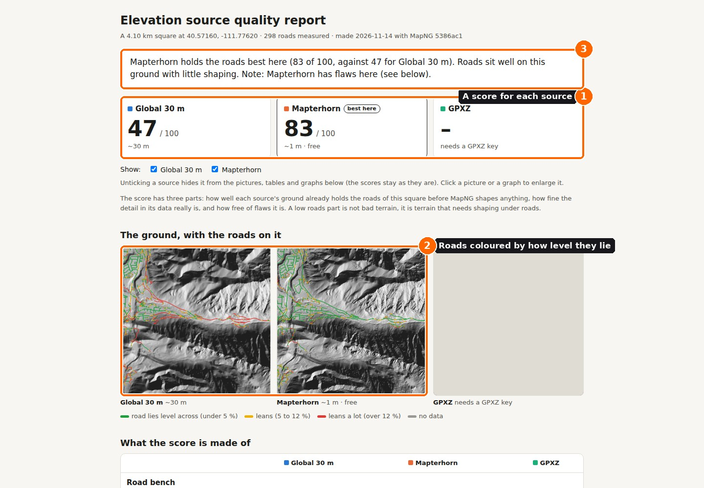
- Sources named for what they are. The elevation list now reads Mapterhorn (free lidar, 30 m elsewhere), Amazon (global 30 m), USGS (USA only, 1 m lidar), NMT Poland (Poland only, 1 m lidar) and GPXZ (paid, global, some lidar). "Best free" was Mapterhorn all along.
- Survey sheets joined. Where two sheets of a national survey meet with a small step (seen as dashed lines across Poland's 1 m data), they are joined with one slope and eased where they disagree.
- Coasts on the global 30 m data. The sea reaches the mapped shore, harbours stand, a pier over the sea stays at the water, and there are no pits along the coast.
- USGS 1 m reads just the map's own box instead of whole 10 km tiles, and one big map's lidar tiles are cached whole, not a seventh of them.
💧 Water and the land around your map
A BeamNG developer's lake-country level in Poland ran at 6 frames a second with errors in the console and broken water. Changed since:
- Water in the surroundings is lighter. Coarse lake tiles, no small far-off ponds or streams, and no occlusion queries on water.
- A reservoir mapped as sometimes dry is a lake where the elevation data shows it full.
- The surroundings have more sources. Mapterhorn's free lidar and Poland's 1 m model can be the backdrop's elevation, and a source is offered only where it has data. "Map data not yet available" tiles no longer end up in the satellite picture.
⚡ A faster desktop app
Every Generate and Export step was looked at for work that could use more cores. Measured here on an 8 km map:
- Big pictures are written on many cores. An 8 km texture took 10.9 seconds to save and now takes 0.7.
- Generate on the global 30 m data: 78 seconds before, 54 now. The next texture is painted while the last one is being saved.
- Export: 112 seconds before, 88 now, from lake beds, paint cuts and crossings without repeated work. The heightmap is written on many cores.
- The game texture's satellite detail runs on worker threads, and its steep-rock and shadowed-water passes lost their per-pixel waste.
🛟 Very large maps, and when something goes wrong
- "Invalid string length" on a huge city. Someone sent a report from a 33 km city with 990,000 map features, whose export stopped part-way. Run again here on that version, it stopped at the same step: the buildings step handed every feature to its helpers as one piece of text, longer than the longest text the engine can hold. Features now travel in pieces, there and in two other places that did the same.
- "Extremely heavy." Maps past anything MapNG has been tried on are rated that way before you start, and the website warns before a map a browser tab will not finish.
- A page older than the site. Four reports in one night read "out of memory" on a small map. Their pages had been open since before an update, and a part of the app they needed was gone. Such a page now shows the update notice with Reload.
- A full disk is said plainly, instead of "ENOSPC: no space left on device".
- Elevation where Amazon cannot be reached. A 1 km Generate failed with every elevation tile missing while the satellite tiles arrived: the global 30 m elevation comes straight from Amazon's storage, which some networks cannot reach. When that download fails, MapNG now takes the elevation from Mapterhorn's tiles instead, and if those fail too, fetches Amazon's through mapng.com.
- The disclaimer says what a heavy map can do: use all of a computer's memory or fill its disk, and freeze or crash the browser, the app, the game or the computer. MapNG is free software with no warranty, used at your own risk.
- Graphics problems. A problem report now includes your graphics card and driver, Help has a Software Rendering switch for cards that garble the preview, and running out of graphics memory has a clear message.
🔧 Smaller things
- Road widths from the satellite picture. Map data has a new choice to measure road widths from the satellite picture. It is off unless you choose it.
- Street parking is no longer assumed. A town street with no parking tags is built at its driving width, so residential streets come out narrower.
- Planned roads and roads in tunnels are not painted on the ground texture. A proposed trail in a canyon had been painted as asphalt.
- The lock on the location map works at any time, also with an Area Mask drawn.
- Generate could be pressed with GPXZ chosen and no key. It is disabled until there is one.
- The 3D preview remembers its settings: sky, sun, detail, water, wireframe and surroundings.
- One look for controls of one kind. Switches, dropdowns, checkboxes, buttons and dialogs that had drifted apart are styled alike again.
- Dark mode reaches the 3D preview's switches, the map's tooltips, and the browser's own scrollbars and lists; the progress bar's track shows in light mode again.
- Uploaded files' details (grid, resolution, units, coverage) are shown in all seven languages, and a dozen texts that were still in English are translated.
- Grass tufts. Dry grass and lawns drew two tufts squeezed into each blade card; each card now has one.
- Background areas are called Area Mask, and a line round an area too small for the map says so.
- Your own OSM file: a JOSM file made of several downloads is read whole.
- A mapped kerb gets no rail.
- Levels carry the place's UTC offset, so the time of day is the place's own.
- Roads whose names differ only in letter case no longer share one object name in the game, which merged two roads.
- Hero Roads keep MapNG's own road markings, drawn by each country's rules.
- Test builds. Help > Get Test Builds offers the desktop builds made between releases. Eleven went out between 0.3.0 and this version.
- MapNG's own map data covers the strip along its archives' edges, and a failed read from storage is tried again.
- A page on how MapNG is built.
🚧 Left open for the update after this one
Measured or reported, understood, and not in 0.3.1:
- Tunnel aprons. A slot of up to 1.85 m where a tunnel's apron ends on the freeway-cap test level. The largest fault still measured.
- Two parts of one bridge at different heights where a ramp merges (0.94 m on one interstate bridge), and a few bridge ends with 0.5 to 0.9 m between deck and ground.
- Mesh Roads at hill junctions and where a deck meets a bridge or a tunnel floor.
- Hero Roads: junctions joined, and a bake that travels with the level.
- "The roads have waves." On the global 30 m data the two sides of a divided road can ride at different heights. Reproduced, not fixed.
- More countries in the road width library, and a default width you can set yourself where the figures still do not fit.
- A report that says "partial download" from a 33 km map, with no log to go on.
- Still open from 0.3.0: steep foot links as stairs, bus lanes and cycle paths, buildings as separate objects, a fresher planet copy.
🙏 Thanks
Nearly everything above started as a message, a screenshot or a report from someone testing MapNG. Thank you:
- Wonly (BeamNG): the Hero Roads feedback (lane widths, hundreds of roads, too many points, how baking works), the hill road that came out under the terrain, the garbled preview that led to graphics details in reports and the Software Rendering switch, the Pennine map whose report led to the road widths, Poland's lane width chart, and the grass tufts.
- mcct (BeamNG): the lake-country level in Poland whose water, console errors and frame rate led to the water and backdrop changes.
- Fizz_Mechanic: 3D models as a creator's tool (the picked area, tiles, the point spacing and its cost), smooth roads, and the mountain galleries.
- Jevi: JOSM files of several downloads, and road widths.
- alxti: the proposed trail painted as asphalt, and what the quality report should measure.
- glitter_shitter: "the roads have waves", with reports and screenshots from a 16 km city.
- dutch_guy_2003, lominsa, .splatplays, kreunz, uranium.boom, SailorSunny405: reports, screenshots, test levels, answers to each other's questions, and the test builds tried one after another.
- Everyone who pressed Send report. The huge-city export, the "out of memory" on stale pages and the full disk were all found from reports sent from the app and the website.
Map data © OpenStreetMap contributors and the Overture Maps Foundation. Elevation: Mapzen / AWS Terrain Tiles, Mapterhorn and its open-data sources, USGS 3DEP, Poland's GUGiK, and GPXZ where you use it.
Heads-up: the Windows build still isn't code-signed. If SmartScreen warns you, choose More info, then Run anyway.
Found something? Use Send report (on a level, or when something fails), post in the MapNG Discord or open a GitHub issue. 🧡